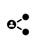

O jogo da "Travessia da estrada"
Neste tutorial iremos desenvolver um jogo gráfico que apresenta ao jogador o desafio de atravessar ruas bastante movimentadas... Este jogo é uma versão simplificada do clássico Crossy Road, um jogo para smartphone lançado em 2014. O nome e conceito do jogo foi baseado na piada ''Porque é que a Galinha atravessou a Rua?".
Crossy Road - wikipedia
1 Preparação do jogo
Este jogo será desenvolvido num ambiente gráfico, utilizando o módulo p5.
Iremos definir estas três constantes:
· LARGURA - largura da janela gráfica;
· ALTURA = altura da janela gráfica;
· NIVEL = definição do layout do nível do jogo, definindo as estradas e o seu sentido (1 para a direita ou -1 para a esquerda) ou as faixas sem trânsito (0).
E estas são calculadas com base nas anteriores:
· DELTA - as dimensões da quadrícula;
· COMP = número de quadrículas nas estradas.
E também necessitaremos de variáveis globais:
· jogador - posição do jogador;
· filas - lista com as filas de tráfego;
· timer - temporizador - guarda os segundos da última atualização.
Comece o seu ficheiro de código fonte com as seguintes instruções:
from p5 import *
import random
# definições globais
LARGURA = 600
ALTURA = 400
NIVEL = [0, -1, -1, 1, 1, 0, -1, -1, 1, 0, -1, 1, 0] # 0-passeio; 1-direita, -1-esquerda
DELTA = ALTURA // len (NIVEL) # dimenções da quadrícula
COMP = LARGURA // DELTA # numero de quadrículas das estradas
# variáveis globais
jogador = []
filas = []
timer = 0
2 A abstração Fila
O jogo envolve "filas de tráfego", pelo que a abstração mais indicada para o realizar será a Fila. Esta é uma abstração que permite guardar uma sequência de dados, possibilitando a fácil inserção de dados no final da fila e a fácil extração de informação do início da fila. É assim uma estrutura FIFO (First In First Out).
Não existe uma abstração de dados em Python que implemente na totalidade o conceito de Fila, pelo que iremos utilizar a abstração Fila definida na secção 10.2:
##################
# ABSTRAÇÃO FILA #
##################
# construtor
def cria_fila():
return []
# seletores
def fila_vazia(fila):
if len (fila) == 0:
return True
else:
return False
def frente_da_fila(fila):
if not fila_vazia(fila):
return fila[0]
else:
return False
def cauda_da_fila(fila):
if not fila_vazia(fila):
return fila[-1]
else:
return False
# modificadores
def entra_na_fila(fila, elem):
fila.append(elem)
def sai_da_fila(fila):
if not fila_vazia(fila):
return fila.pop(0)
else:
return False
##################
3 Estruturação do jogo[AC1]
O jogo será estruturado com base no par de funções associadas ao módulo p5:
· setup() - configuração do jogo;
· draw() - ciclo de jogo.
E também uma outra função para o controlo do jogo pelo jogador através do teclado:
· key_pressed() - responde aos eventos de premir as teclas.
Faremos também a decomposição do problema base, em subproblemas que facilitem a criação do ciclo de jogo:
· desloca() - desloca um ponto de acordo com um vetor definido por (dx, dy);
# desloca jogador
def desloca(p, dx, dy):
p[0]+= dx
p[1]+= dy
· ponto() - calcula as coordenadas do ecrã de uma determinada quadrícula, definida por (linha, coluna)
# calcula as coordenadas do ecrã
def ponto(q):
return (q[0]*DELTA + DELTA//2, q[1]*DELTA + DELTA//2)
· fora() - verifica se um determinado veículo está fora do ecrã;
# verifica se um automóvel está fora
def fora (carro):
return carro[0] < 0 or carro[0] > COMP
· trafego() - atualiza as filas de veículos deslocando os veículos.
O algoritmo desta função é o seguinte:
1. Determinar se a temporização de 1 segundo já passou. Caso contrário, ignora o resto da função, retornando True;
2.
Percorre todas as filas de tráfego (-1 ou 1) e,
para cada fila de tráfego, move todos os veículos;
Se por acaso o veículo, atropelou o jogador, então retorna False, indicando o fim do jogo;
3. Caso uma fila tenha menos de 10 automóveis, insere novo automóvel na fila;
4. Caso algum automóvel fique fora do ecrã, é removido da fila.
Insira o código correspondente à função trafego().
# atualiza filas de veículos
def trafego():
global jogador, filas, timer
# timer
if second()==timer:
return True
else:
timer = second()
# gere filas
for i in range(len(NIVEL)-1):
if NIVEL[i] != 0:
# move fila de automóveis
for carro in filas[i]:
desloca(carro, NIVEL[i], 0)
if carro == jogador:
# se carro atropela jogador retorna falso
return False
# insere novos carros até um máximo de 10
if len(filas[i]) < 10:
ultimo = cauda_da_fila(filas[i])
if ultimo:
novo = ultimo[::]
desloca(novo, random.randint(-5, -2)*NIVEL[i], 0)
elif NIVEL[i] > 0:
novo = [random.randint(-2,0), i]
else:
novo = [COMP + random.randint(0, 2), i]
entra_na_fila(filas[i], novo)
# remove carros que saiam do ecrã
if fora(frente_da_fila(filas[i])):
sai_da_fila(filas[i])
return True
4 Configuração do jogo
A configuração do jogo segue o seguinte algoritmo:
1. cria janela gráfica;
2. cria o avatar do jogador na última linha do nível de jogo;
3. cria as filas de tráfego do nível de jogo;
4. insere tráfego nas filas de jogo... Para que o jogo não se inicie com as estradas vazias.
# inicialização do jogo
def setup():
global jogador, filas
# janela
title("Travessia da Estrada")
size(LARGURA, ALTURA)
no_stroke()
# jogador
jogador = [COMP // 2, len(NIVEL)-1]
# filas de automóveis
for i in range(len(NIVEL)-1):
filas.append(cria_fila())
# insere tráfego nas filas
for i in range(10):
timer = -1
trafego()
|
|
Neste último ciclo for o valor do timer é colocado a -1.[AC2] Sendo que a função seconds() só retorna valores entre 0 e 59, para que será necessário este valor? Pista: Observe o passo inicial da função trafego()...
|
5 O ciclo de jogo
O ciclo de jogo segue o seguinte algoritmo, que opera sobre o jogador:
1. Verificar se o jogador venceu (chegou à linha inicial (0). Nesse caso o jogo termina com o ecrã todo pintado a verde.
2. Desenho do nível de jogo: fundo verde com estradas a preto;
3. Desenha avatar do jogador através de um círculo amarelo;
4. Desloca as filas de tráfego, através da função trafego(), e desenha os automóveis. Caso o jogador seja atropelado, reposiciona-se o avatar do jogador na última linha, como inicialmente.
Escreva o seguinte código:
def draw():
global jogador
# verifica se terminou o nível
if jogador[1] == 0:
background("green")
circle(ponto(jogador), DELTA)
no_loop()
return
# desenha nível - fundo verde com estradas a preto
background("green")
fill ("black")
oy = 0
for faixa in NIVEL:
if faixa != 0:
# rectangulo da faixa
rect((0,oy), LARGURA, DELTA)
oy += DELTA
# jogador
fill("yellow")
circle(ponto(jogador), DELTA)
# atualiza filas de tráfego
if trafego():
# desenha veículos
fill("blue")
for fila in filas:
for carro in fila:
rect(ponto(carro), DELTA, DELTA//2)
else:
# jogador atropelado - reinicia
jogador = [COMP // 2, len(NIVEL)-1]
6 O input do jogador
O jogador interage com o jogo através das teclas do cursor, que lhe permitem mover o seu avatar.
O código é o seguinte, que se baseia numa seleção múltipla:
# controla a interação com o utilizador através do teclado
def key_pressed():
global jogador
# verifica teclas premidas
if key == "UP":
desloca(jogador, 0, -1)
elif key == "DOWN":
if jogador[1] < len(NIVEL)-1:
desloca(jogador, 0, 1)
elif key == "LEFT":
if jogador[0] > 0:
desloca(jogador, -1, 0)
elif key == "RIGHT":
if jogador[0] < COMP-1:
desloca(jogador, 1, 0)
if __name__ == '__main__':
run()
7 Desafio final
Um tipo de jogo semelhante é o clássico Speed Race (1974) da Taito. Trata-se de um jogo de desenvolvimento vertical, onde o objetivo é ultrapassar todos os carros concorrentes, sem chocar com estes ou sair de pista.
Com base no código do jogo atual para o desenvolvimento da sua versão do Speed Race. Observe o gameplay original no youtube.
|
 |
Partilhe o seu jogo!
|